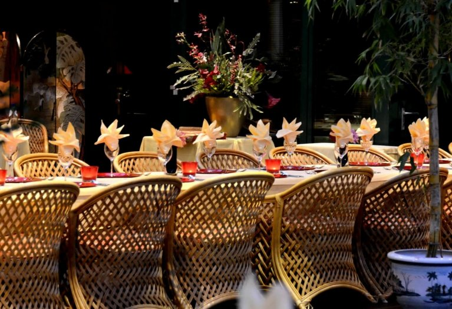
De grote, lichte serre
In de grote, lichte serre is het heerlijk tafelen met vrienden, familie of collega's. Een tafeltje voor twee? De intieme sfeer van het restaurant leent zich uitstekend voor een heerlijk diner en een goed gesprek.
Wassenaar, sinds 1979
Proef het Verre Oosten, in de sfeer, in de smaken én in de gastvrijheid. Indonesische, Chinese en Thaise keuken in een oosterse oase in het bosrijke Wassenaar.
Woensdag t/m zondag geopend

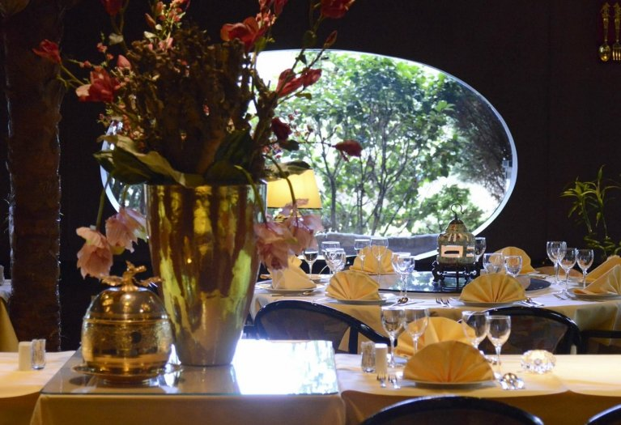
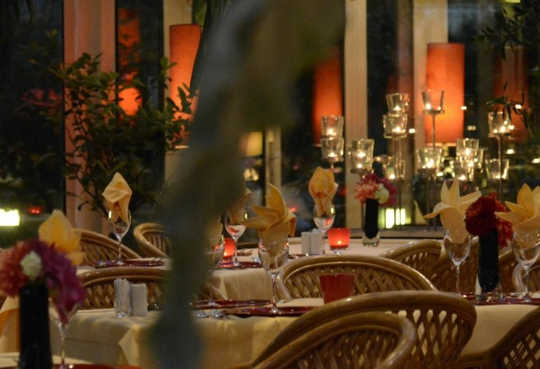
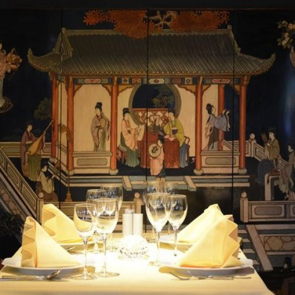
In 1979 opent Flamingo Paradise voor het eerst haar deuren. Goedbewaarde familierecepten, service en sfeer maken het restaurant algauw tot eenieders favoriet.
Tot op de dag van vandaag is Flamingo Paradise een heerlijke plek voor de meest uiteenlopende gelegenheden: een uitgebreide zakenlunch, een romantisch diner, een samenkomst met de familie of een ontspannen avond met vrienden.
De familierecepten zijn doorgegeven aan de volgende generatie, die het restaurant hebben gemaakt tot een unieke combinatie van traditie en innovatie. Het restaurant ligt centraal tussen de grote steden, is gemakkelijk bereikbaar en heeft ruime parkeergelegenheid.
Het Verre Oosten was nog nooit zo dichtbij. Graag tot snel!
Dat geldt niet alleen voor de smaken, maar ook zeker voor de sfeer.

In de grote, lichte serre is het heerlijk tafelen met vrienden, familie of collega's. Een tafeltje voor twee? De intieme sfeer van het restaurant leent zich uitstekend voor een heerlijk diner en een goed gesprek.
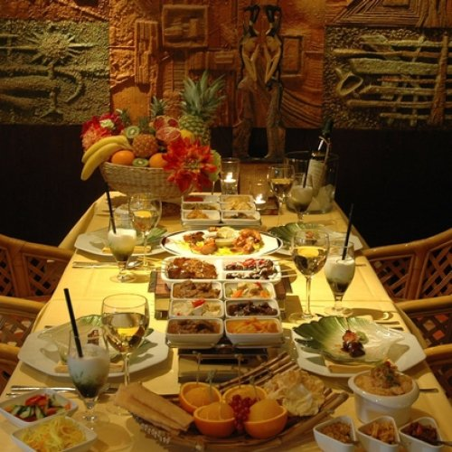
Ook private dining behoort tot de mogelijkheden, in onze kleine serre. Voor een verjaardag, jubileum, personeelsfeest of familiereünie aan een prachtig gedekte tafel.
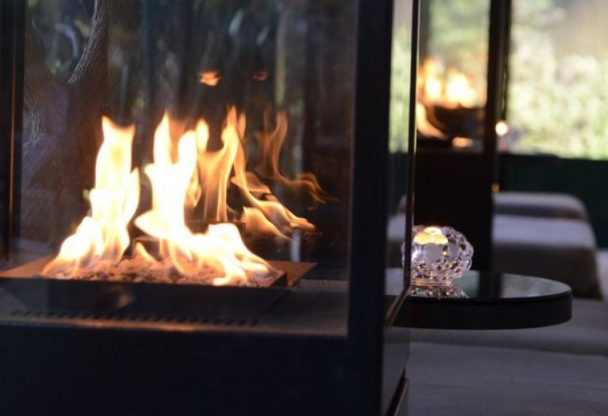
Op warme zomerdagen is Flamingo Paradise een heerlijke plek om buiten neer te strijken voor een lekkere lunch of een gezellig diner. In de prachtige, groene tuin lijken de drukte van de stad en de hectiek van volle stranden plotseling ver weg. Ontspannen achterover leunen met een lekker drankje, en als de avond valt, steken we gewoon de haard aan.
Een avond lekker thuis blijven, maar toch genieten van de oosterse keuken? Als u telefonisch doorgeeft waar u zin in heeft, zetten wij het voor u klaar.
Bestel via 070 51 79 409Bij Flamingo Paradise maken we uw verjaardag, jubileum, personeelsfeest of familiereünie graag extra bijzonder. Aan een prachtig gedekte tafel met de heerlijkste gerechten geniet u samen van een onvergetelijk moment.
Mail ons uw wensenEen bijzondere gelegenheid? Flamingo Paradise kookt met veel plezier bij u thuis of op een andere locatie. We maken graag een afspraak om de mogelijkheden en uw specifieke wensen te bespreken.
Maak een afspraakOp 24, 25 en 26 december 2026 bent u welkom voor lunch (12.00 - 15.00 uur) en diner (17.00 - 22.00 uur). Op 27 december zijn we open van 17.00 tot 22.00 uur.
À la carte is met de kerstdagen alleen mogelijk voor take away. Plaats uw bestelling graag tijdig.
Reserveer voor kerst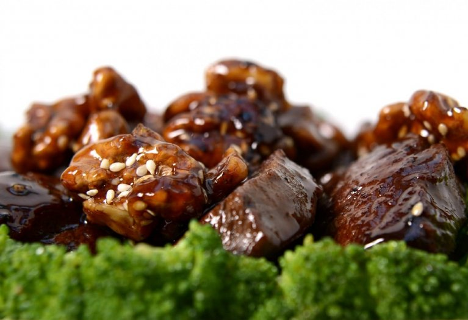
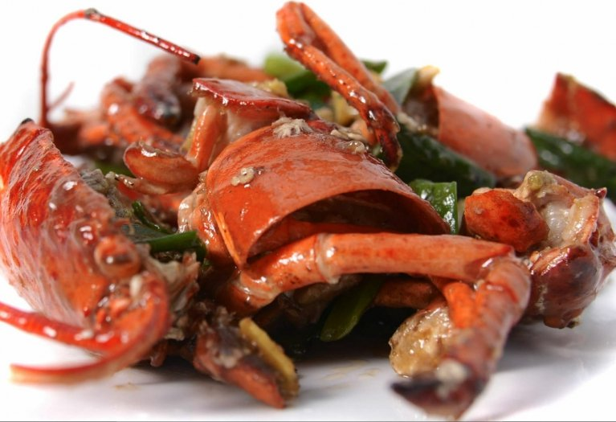
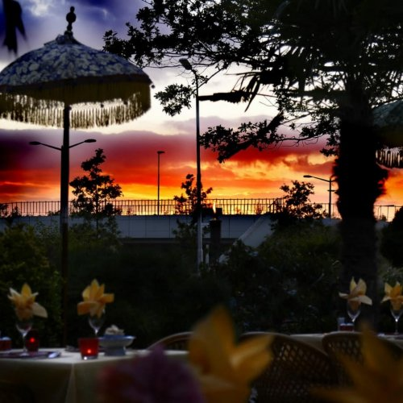
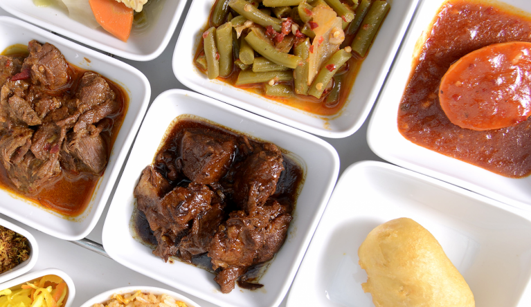
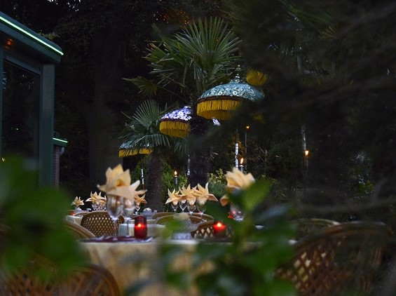
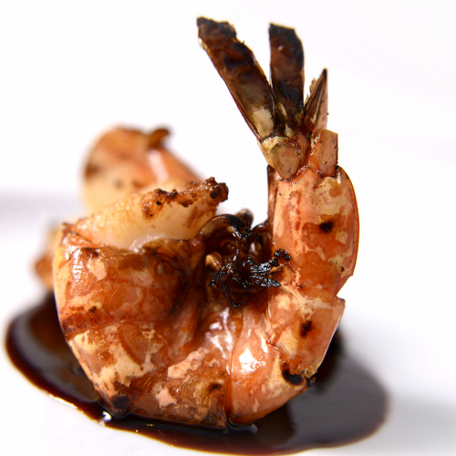
Reserveren kan telefonisch of per e-mail. Een reservering voor dezelfde dag kunt u het beste telefonisch doorgeven.
070 51 79 409Buurtweg 117
2244 AC Wassenaar
Eigen terrein met ruime parkeergelegenheid
| Maandag | gesloten |
|---|---|
| Dinsdag | gesloten |
| Woensdag | 17.00 - 22.00 |
| Donderdag | 17.00 - 22.00 |
| Vrijdag | 12.00 - 14.00 17.00 - 22.00 |
| Zaterdag | 12.00 - 14.00 17.00 - 22.00 |
| Zondag | 12.00 - 21.00 |
Met kerst wijken de tijden af: 24 t/m 26 december 12.00 - 15.00 en 17.00 - 22.00 uur, 27 december 17.00 - 22.00 uur.